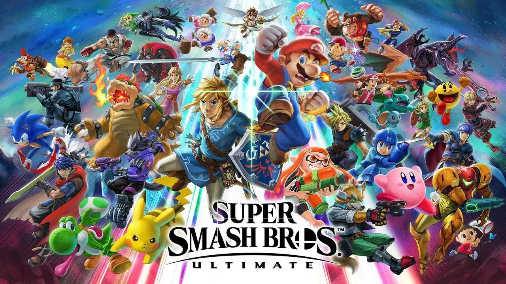
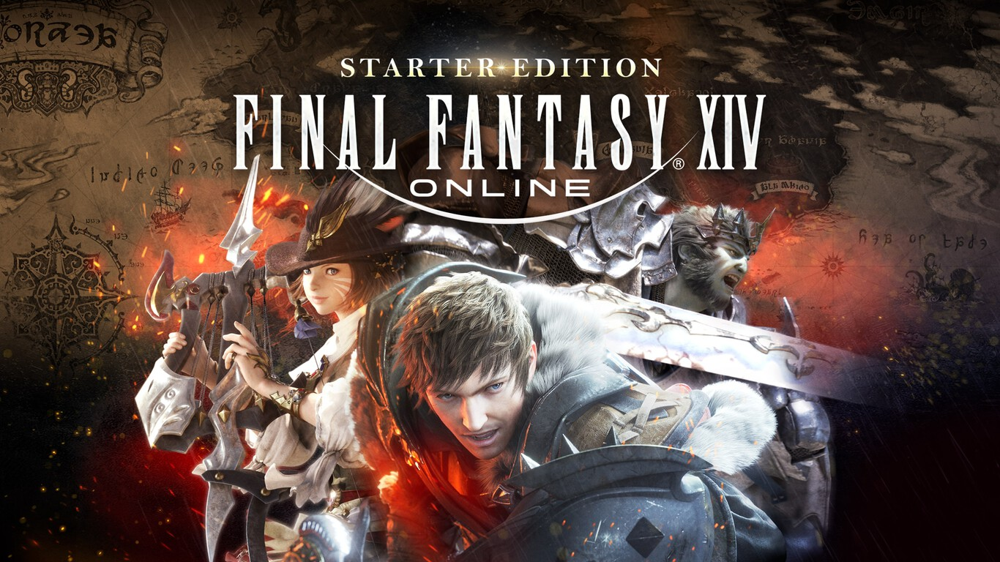

Masahiro Sakurai insiste en que
el próximo Super Smash Bros. tardará en llegar

Masahiro Sakurai, padre de
Super Smash Bros., no tiene del
todo claro cómo debe continuar en el futuro. Pese a que el
diseñador japonés ha insistido en numerosas ocasiones durante el
último año que piensa en jubilarse.
‘Final Fantasy XIV’ llegará a
Xbox: Square Enix romperá la exclusiva con PlayStation para su
próxima gran expansión

La compañía confirmó que
‘Final Fantasy XIV’ por fin
llega a Xbox, tomando en cuenta que desde su lanzamiento en 2013
para PlayStation 3, siempre fue exclusivo de las consolas de Sony,
además de contar con su versión de PC con juego cruzado.